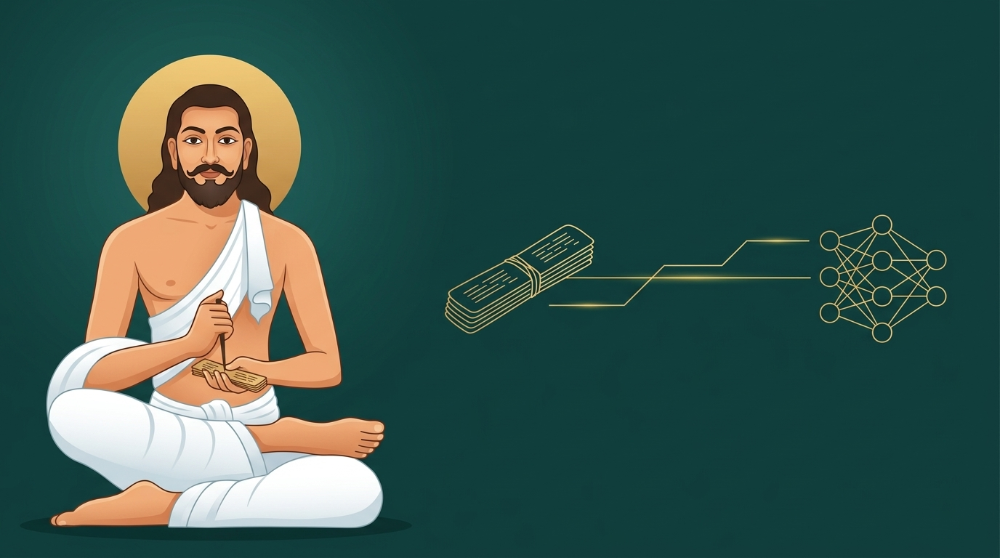
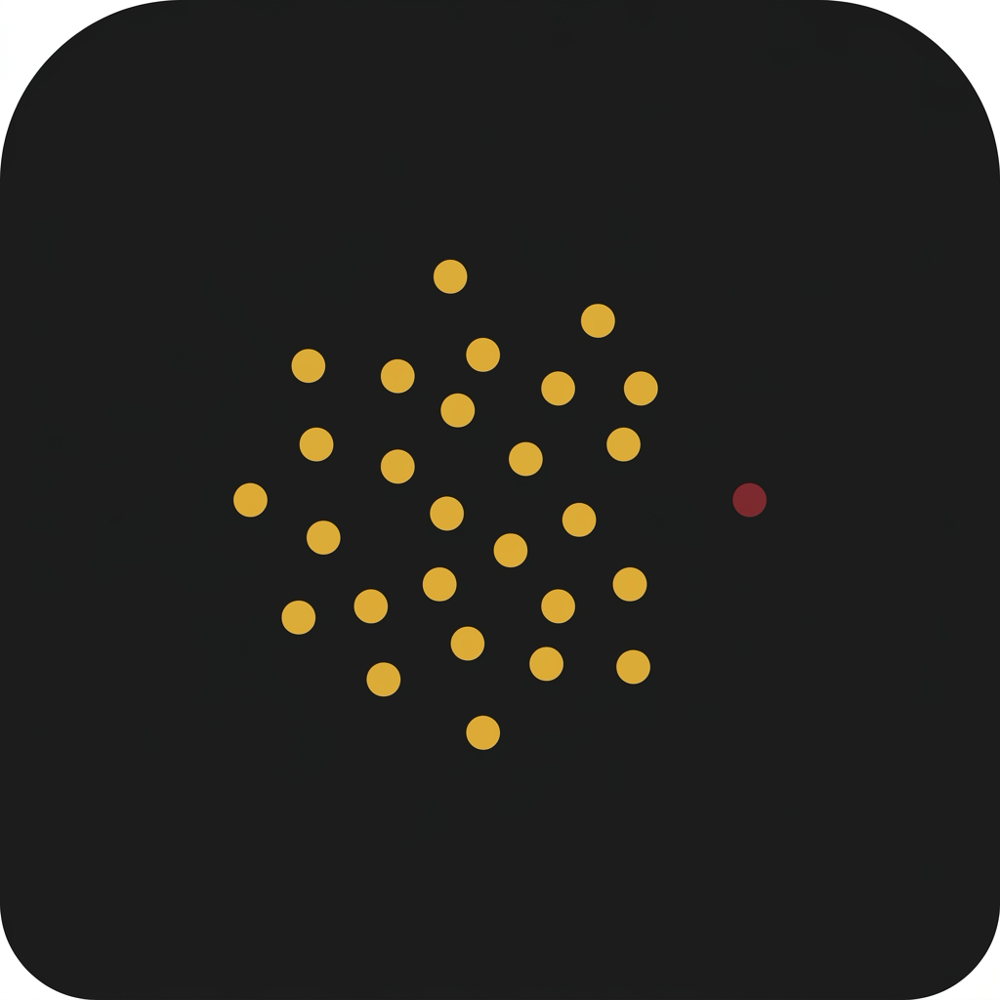

மெய்ப்பாட்டியல் மற்றும் உணர்வுக் கண்டறிதல் தொழில்நுட்பங்களின் இணை வளர்ச்சிப் பார்வை
AI and Classical Language: A Parallel Development Perspective on Meyppaattiyal and Emotion Detection

இவ்வாய்வு, தொல்காப்பியத்தின் "மெய்ப்பாட்டியல்" எனும் பகுதியை மனித உணர்வுகளையும் உடல் எதிர்வினைகளையும் வகைப்படுத்தும் அறிவியல் கட்டமைப்பாக ஆராய்கிறது. இப்பண்டை நூலுக்கும் உணர்வுசார் கணினியியல் (Affective Computing), முகபாவ அங்கீகாரம், இயல்பு விலகல் கண்டறிதல் போன்ற நவீனத் தொழில்நுட்பங்களுக்கும் இடையிலான அமைப்பு ஒற்றுமைகளை இது வரைந்து காட்டுகிறது. அவற்றின் இணை வளர்ச்சியில் கவனம் செலுத்தும் இவ்வாய்வு, ஒன்றுக்கொன்று சமானம் என்று கூறுவதில்லை.
This study examines the "Meyppaattiyal" section of the Tolkappiyam as a scientific framework for classifying human emotions and physical responses. It maps the structural parallels between this ancient text and modern technologies like Affective Computing, facial expression recognition, and anomaly detection, focusing on their parallel evolution rather than claiming a one-to-one equivalence.
மூன்று கருத்தாக்க இணைகள் — Three structural comparisons across classical and modern frameworks
Emotion Detection & FACS
Tolkappiyar's eight meyppaadu (தொல். பொ. 1194) compared to Ekman's basic-emotion theory and the Facial Action Coding System.

Anomaly Detection
The four factors of marutkai / wonder (தொல். பொ. 1198) mapped against point, contextual, and collective anomaly types.
Finite-State Modeling
Tolkappiyar's 32 cognitive/emotional/situational states (தொல். பொ. 1192–1203) read as a state-transition system.